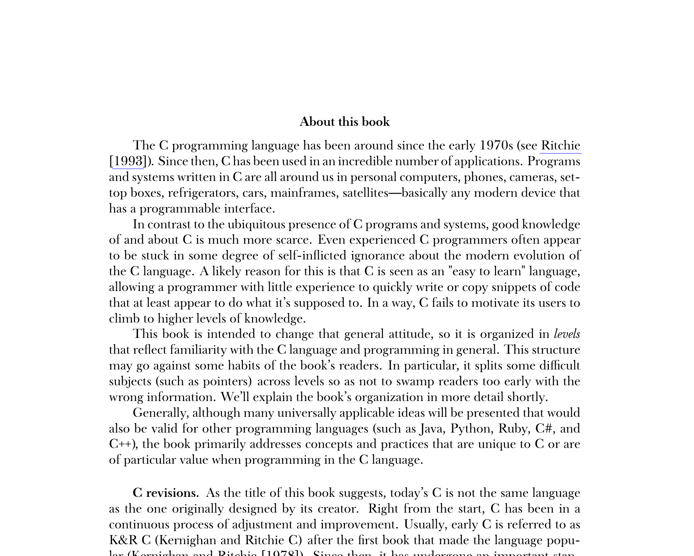

Книга Modern C

В течении нескольких последних дней активно почитывал книгу Дженса Густеда “Modern C”.
Книга будет хороша как общий справочник, набор best practices кодинга на C, да и просто посмотреть, какие трюки в C23 можно делать.
Удивительно, что столь детальную и кропотливую работу можно найти в свободном доступе. Распространяется книга по лицензии CC 4.0 в вариации BY-NC-ND. Это очень радует.
Книга структурирована по уровню вовлечённости в C. От самых базовых элементов до многопоточных программ.
Для опытных разработчиков больше всего будут интересны Takeaways. Они резюмируют текст и позволяют фокусироваться на самом интересном. В конце книги есть листинг всех Takeaways, разбитый по разделам книги.
Рекомендую для любителей C.